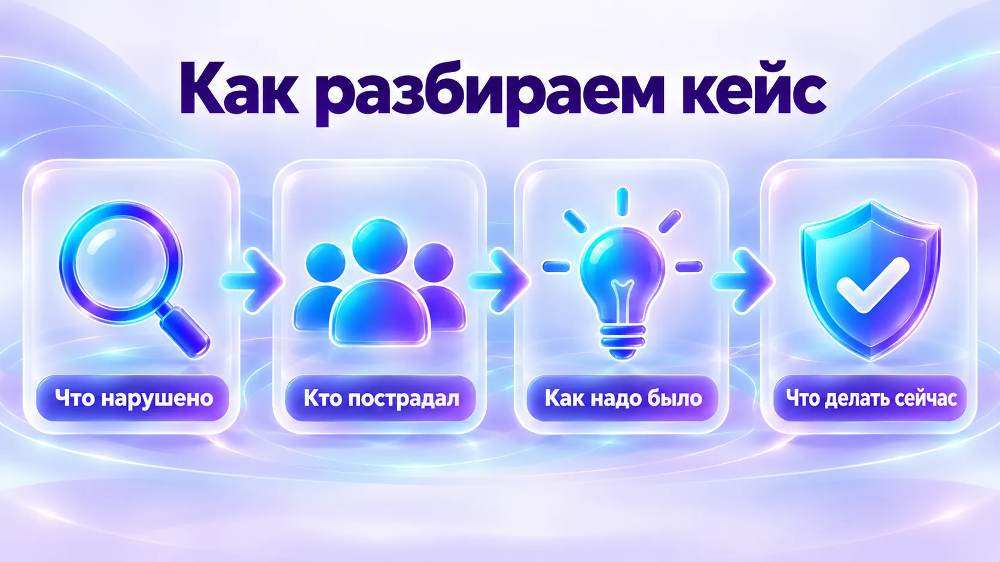
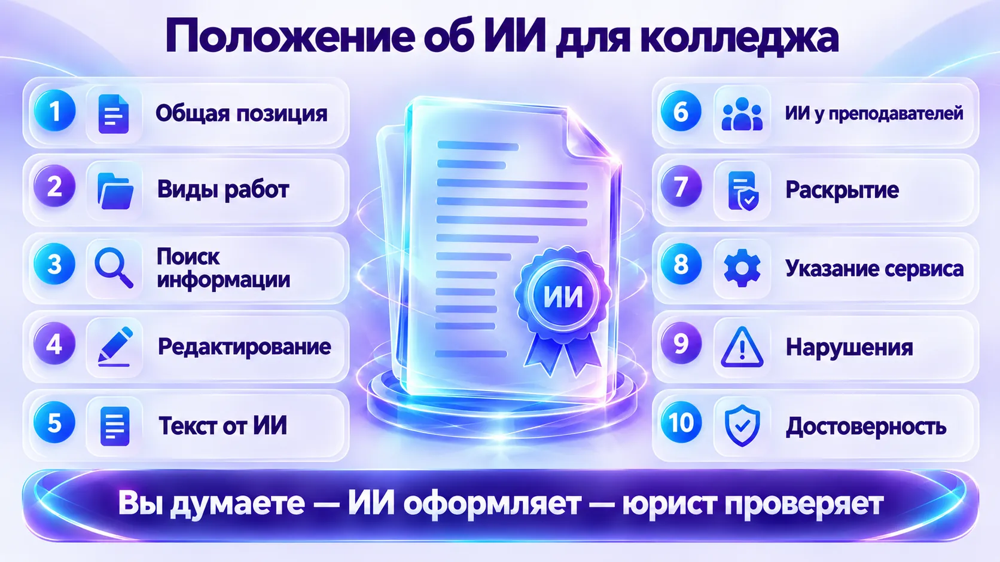
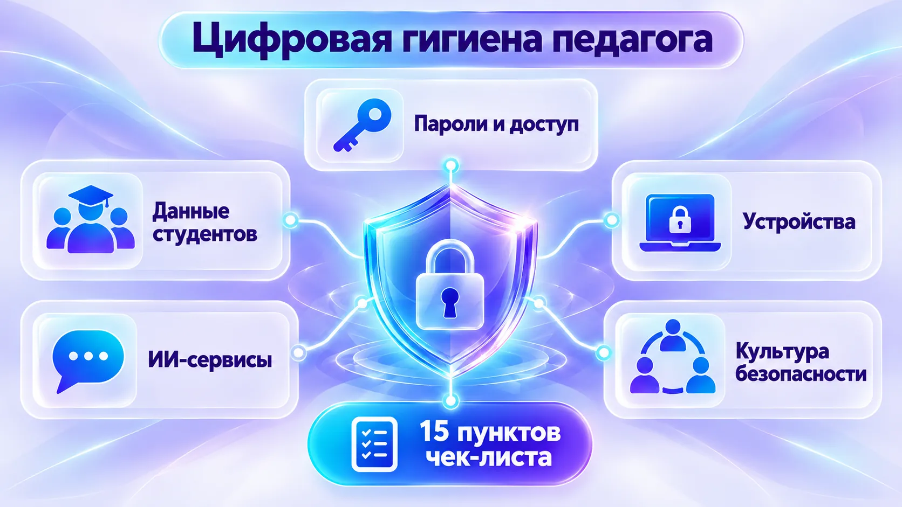

Как разбираем кейс
Ведущий читает кейс. Две минуты думаете сами и пишете в чат первое, что видите. Потом обсуждаем голосом и открываем разбор.
Что нарушено
Закон, этика, здравый смысл — что именно пошло не так.
Кто пострадал
Студенты, родители, сам преподаватель, колледж.
Как надо было
Что сделать иначе с самого начала.
Что делать сейчас
Конкретные шаги, если это уже случилось.

Семь кейсов
На занятии разбираем четыре — они помечены. Остальные — для самостоятельного чтения. Все ситуации собирательные, имена условные.
1«Умный помощник для слабых студентов»на занятии▸
Преподаватель программирования Алексей сделал Telegram-бота на базе ChatGPT, который круглосуточно отвечает студентам на вопросы по коду. Чтобы бот «лучше понимал» студентов, Алексей загрузил в него списки группы с уровнем знаний, историю ошибок, оценки и свои комментарии: «Иван часто ленится», «Мария старательная, но медленная».
Через месяц студент спросил бота: «Что ты знаешь о студенте Иване?» — и получил полный профиль с комментариями преподавателя. Родители пожаловались в Роскомнадзор.
Вопросы
- Какие нарушения допущены?
- Какие данные нельзя было загружать?
- Можно ли было сделать такого бота безопасно?
Показать разбор
Что нарушено
- Персональные данные студентов ушли в зарубежный сервис — а с 1 июля 2025 года данные граждан РФ нельзя собирать и хранить в иностранных базах.
- Нет основания и согласия на такую обработку, цель не определена.
- Избыточные данные: оценки и субъективные характеристики для помощи с кодом не нужны.
- Бот выдал то, что в него загрузили. Любого бота можно уговорить показать свою базу — это его свойство, а не сбой.
Как надо было
Бот знает только учебные материалы: методички, разборы типовых ошибок, примеры кода. О конкретных студентах — ничего. Российский сервис, согласование с колледжем. Как собрать такого бота — в модулях 3 и 4 курса.
Что делать сейчас
Удалить данные из бота, сообщить ответственному за персональные данные в колледже, честно объяснить ситуацию группе.
2«Дипфейк с учительницей»▸
Преподаватель истории Елена Викторовна ведёт страницу во ВКонтакте: фото из путешествий, педагогический опыт. Однажды в родительский чат попало порнографическое видео с её лицом — дипфейк. Его сделал 15-летний студент, недовольный оценкой: взял фото со страницы и прогнал через бесплатный сервис. Видео увидели больше 50 человек, часть родителей требует уволить учительницу.
Вопросы
- Виновата ли учительница?
- Что грозит автору?
- Что должна сделать администрация?
Показать разбор
Кто виноват
Автор дипфейка. Учительница — пострадавшая; публиковать свои фото не запрещено.
Правовая сторона
- Отдельной статьи о дипфейках нет; законопроект о дипфейке как отягчающем обстоятельстве не принят.
- Применимы клевета, нарушение неприкосновенности частной жизни; использовать изображение человека без согласия запрещает ст. 152.1 Гражданского кодекса — это основание для иска и требования удалить.
- Уголовная ответственность по большинству таких статей наступает с 16 лет. Для 15-летнего — комиссия по делам несовершеннолетних, учёт в ПДН, ответственность родителей за вред.
Что делать сейчас
- Зафиксировать: скриншоты, ссылки, кто и когда переслал.
- Заявление в полицию, жалоба площадке на удаление.
- Администрация публично в том же чате заявляет, что видео — подделка, и поддерживает педагога.
Профилактика
Настройки приватности страницы, разговор со студентами о дипфейках и ответственности.
3«ИИ для проверки эссе»на занятии▸
Преподаватель литературы Ольга Сергеевна проверяет 30 эссе по 5 страниц. Она загружает каждое в ChatGPT вместе с фамилией студента и просит оценить по критериям, найти ошибки, написать комментарий и предложить оценку. Оценки переносит в журнал не глядя. Вместо 6 часов — один.
Через месяц студенты заметили, что комментарии у всех одинаковые по стилю, будто написаны одной рукой, и спросили напрямую. Ольга Сергеевна призналась. Группа почувствовала себя обманутой.
Вопросы
- Имеет ли право преподаватель проверять работы с ИИ?
- Что здесь не так — с законом и с этикой?
- Как делать правильно?
Показать разбор
Что не так
- Фамилии и тексты работ ушли в зарубежный сервис.
- Студенты не знали, что работы проверяет ИИ.
- Оценку фактически поставил ИИ — преподаватель её не проверял.
Как делать правильно
- Заранее сказать группе, что ИИ помогает с проверкой.
- Убрать ФИО, работать в российском сервисе.
- Дать модели свои критерии оценивания.
- ИИ готовит черновик комментариев и находит ошибки, оценку ставит преподаватель.
4«Бот-друг подростка»▸
16-летняя студентка Маша каждый день пишет ИИ-персонажу в приложении-компаньоне: о разводе родителей, травле в группе, о том, что «никому не нужна» и «иногда не хочется жить». Бот отвечает сочувственно, но к людям не направляет: «Я всегда буду рядом». Куратор замечает, что Маша замкнулась и часами сидит в телефоне. Родители узнают, что она проводит с ботом по 4–5 часов в день.
Вопросы
- В чём опасность?
- Должен ли педагог вмешиваться и как говорить со студенткой?
- Какие признаки проблемного общения с ИИ?
Показать разбор
Главное
Слова «не хочется жить» — сигнал, который нельзя оставлять без реакции, независимо от ИИ. Сразу — психолог колледжа и родители. Детский телефон доверия: 8-800-2000-122, бесплатно и анонимно.
Почему это опасно
Ассистентов учат быть приятными собеседниками: они соглашаются и поддерживают. Это создаёт эмоциональную зависимость и заменяет живое общение. Character.AI после судебных исков с ноября 2025 года запретил подросткам свободные диалоги, но похожих приложений много.
Признаки
- Несколько часов в день с ботом.
- Делится с ИИ тем, что скрывает от людей.
- Называет бота другом, тревожится без него.
- Замкнутость, ухудшение настроения.
Как говорить
Наедине, без осуждения и без запретов: интерес и забота. Объяснить, как устроен бот и почему он «всегда согласен». Предложить живые альтернативы.
5«Клон голоса преподавателя»▸
Преподаватель математики Сергей Иванович ведёт канал с разборами задач в VK Видео — 50 роликов. Мошенники скопировали его голос, позвонили студентке и от его имени попросили срочно перевести 15 тысяч «на операцию родственнику». Студентка узнала голос и перевела.
Вопросы
- Виноват ли преподаватель?
- Удалять ли видео?
- Как защитить студентов?
Показать разбор
Что делать сейчас
- Студентке — заявление в полицию (мошенничество) и звонок в банк.
- Преподавателю — предупреждение на канале и в группах, сообщить руководству.
Профилактика
- Правило, которое озвучить всем группам: «Я никогда не прошу денег по телефону или в мессенджере».
- Просят денег — положить трубку и перезвонить самому по известному номеру.
- Удалять полезные видео не нужно: преподаватель не виноват, лучше предупредить аудиторию.
6«ИИ выдал чужие данные»на занятии▸
Кафедра экономики завела один аккаунт ГигаЧата на всех преподавателей, память ассистента включена. Преподаватель просит: «Создай тест по экономике для студентов колледжа». В одном из вопросов появляется: «Студент Иванов Пётр из группы Э-202 неправильно решил задачу…» Он никогда не загружал таких данных. На вопрос «Что ты знаешь о группе Э-202?» ассистент выдаёт сведения о студентах, которые загружал коллега.
Вопросы
- Как такое произошло?
- Чья это ошибка — сервиса или пользователей?
- Что делать, если вы это обнаружили?
Показать разбор
Как произошло
Память ассистента принадлежит аккаунту. Коллега загрузил данные группы — ассистент «запомнил» их и использует во всех чатах этого аккаунта, в том числе ваших.
Что делать сейчас
- Удалить сохранённые воспоминания и чаты с данными в настройках сервиса.
- Сообщить ответственному за персональные данные в колледже. При утечке у колледжа как оператора 24 часа, чтобы уведомить Роскомнадзор, и 72 часа на результаты расследования.
Профилактика
- У каждого — свой аккаунт.
- Память ассистента — под контролем, лишнее удалять.
- Реальные ФИО в нейросеть не загружаем: «Студент А», «Студент 1».
7«Задания для студентов с ОВЗ»на занятии▸
В колледже есть инклюзивная группа. Преподаватель хочет персонализировать задания и загружает в ChatGPT список студентов с ФИО, диагнозами, рекомендациями психолога и оценками: «Создай персонализированные задания для каждого». Задания получились отличные, он с гордостью рассказывает об этом на педсовете. Коллега спрашивает: «А ты знаешь, что загружать медицинские данные в ИИ — это нарушение закона?»
Вопросы
- Какие нарушения допущены?
- Почему медицинские данные защищены особо?
- Можно ли было получить те же задания безопасно?
Показать разбор
Что нарушено
- Сведения о здоровье — специальная категория персональных данных, обрабатывать их можно только в строго определённых случаях и с согласием.
- Данные ушли в зарубежный сервис.
- Согласия студентов и родителей нет.
Чем грозит
За неправомерную передачу данных специальной категории гражданину по ч. 16 ст. 13.11 КоАП — 300–400 тыс. ₽. Уголовные статьи (137, 272.1 УК) возможны, но зависят от обстоятельств. Плюс дисциплинарная ответственность.
Как получить те же задания безопасно
Диагнозы для задания не нужны — нужны педагогические формулировки:
Создай задания по теме «…» для пяти студентов 1 курса с разными особенностями обучения: — Студент 1: нужно больше времени, лучше воспринимает информацию небольшими частями. — Студент 2: лучше воспринимает визуально, нужны схемы и картинки. — Студент 3: медленно пишет, лучше подходят устные ответы или выбор из вариантов. — Студент 4: быстро устаёт, нужны короткие задания с перерывами. — Студент 5: базовый уровень подготовки, нужны пошаговые подсказки. Для каждого — одно задание и критерии оценки.
Положение об использовании ИИ для вашего колледжа
Одни вузы запрещают ИИ в студенческих работах, другие разрешают с обязательным указанием, как именно его использовали. Единого правильного ответа нет — но у колледжа должна быть своя позиция. Ответьте одной-двумя фразами на 10 вопросов: вы думаете, ИИ оформляет.

Ответы сохраняются только в вашем браузере и никуда не отправляются.
Обратите внимание на строку «не придумывай номера законов и приказов». Модель всегда что-то ответит, даже если не знает, — так мы страхуем её от выдуманных ссылок. Всё с пометкой [проверить] сверьте сами, а готовый текст покажите юристу или ответственному за персональные данные.
Финальный вопрос
Если этот документ завтра ляжет на стол вашему директору — вы бы его подписали? Чего не хватает?
Чек-лист цифровой безопасности педагога
15 пунктов. Отвечайте честно и для себя — показывать никому не нужно. Внизу появится ваш индекс и что исправить в первую очередь.

Отметьте пункты выше.
Итог и задание
Безопасность в работе с ИИ — не запреты и страхи, а привычки. Запишите три конкретных действия на эту неделю.
Задание в личный кабинет
- Ваши выводы: как корректно использовать ИИ в своей работе — 5–7 предложений.
- Документ «Положение об использовании ИИ», который вы собрали в блоке 3.